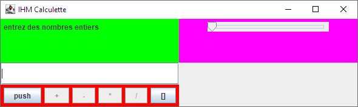

| Nom | MORO |
| Prénom | ALEXANDRE |
| Matricule | 0g5drredxv9 |
Test 1
// une liste, 2 observateurs public void test1() { question1.ConcreteSubject l1 = new question1.ConcreteSubject(); question1.ConcreteObserver o1 = new question1.ConcreteObserver(); question1.ConcreteObserver o2 = new question1.ConcreteObserver(); l1.addObserver(o1); l1.addObserver(o2); l1.insert("test"); l1.insert(" 1 "); // vérifier que les deux observateurs ont bien été notifiés avec les // bons paramètres // On vérifie que les 2 stacks (observer et arguments) ont la bonne taille. assertEquals(2, o1.senders().size()); assertEquals(2, o2.senders().size()); assertEquals(2, o1.arguments().size()); assertEquals(2, o2.arguments().size()); // On verifie que les senders et arguments sont les bons assertEquals(l1, o1.senders().pop()); assertEquals(" 1 ", o1.arguments().pop()); assertEquals(l1, o1.senders().pop()); assertEquals("test",o1.arguments().pop()); assertEquals(l1, o2.senders().pop()); assertEquals(" 1 ", o2.arguments().pop()); assertEquals(l1, o2.senders().pop()); assertEquals("test",o2.arguments().pop()); // ne pas modifier ces lignes, dernières assertions vraies de cette // méthode assertTrue(o1.senders().empty() && o1.arguments().empty()); assertTrue(o2.senders().empty() && o2.arguments().empty()); }
Test 2
// deux listes, 1 observateur public void test2() { question1.ConcreteSubject l1 = new question1.ConcreteSubject(); question1.ConcreteSubject l2 = new question1.ConcreteSubject(); question1.ConcreteObserver o = new question1.ConcreteObserver(); l1.addObserver(o); l2.addObserver(o); l1.insert("testA"); l1.insert(" A "); l2.insert("testB"); l2.insert(" B "); // à compléter à partir de la ligne 56 // vérifier que l'observateur a bien été notifié par les deux listes // On procede de maniere similaire au test1. assertEquals(4, o.senders().size()); assertEquals(4, o.arguments().size()); assertEquals(" B ", o.arguments().pop()); assertEquals(l2, o.senders().pop()); assertEquals("testB", o.arguments().pop()); assertEquals(l2, o.senders().pop()); assertEquals(" A ", o.arguments().pop()); assertEquals(l1, o.senders().pop()); assertEquals("testA", o.arguments().pop()); assertEquals(l1, o.senders().pop()); // ne pas modifier cette ligne, dernière assertion vraie de cette // méthode assertTrue(o.senders().empty() && o.arguments().empty()); }
Test 3
// deux listes, 2 observateurs public void test3() { question1.ConcreteSubject l1 = new question1.ConcreteSubject(); question1.ConcreteSubject l2 = new question1.ConcreteSubject(); question1.ConcreteObserver o1 = new question1.ConcreteObserver(); question1.ConcreteObserver o2 = new question1.ConcreteObserver(); l1.addObserver(o1); l1.addObserver(o2); l2.addObserver(o1); l2.addObserver(o2); // à compléter à partir de la ligne 81 // vérifier le bon fonctionnement de countObservers(), de deleteObserver // et deleteObservers() assertEquals(2, l1.countObservers()); assertEquals(2, l2.countObservers()); // Supprimme tous les observateurs l1.deleteObservers(); l2.deleteObservers(); assertEquals(0, l1.countObservers()); assertEquals(0, l2.countObservers()); l1.addObserver(o1); l2.addObserver(o1); assertEquals(1, l1.countObservers()); assertEquals(1, l2.countObservers()); // Supprimme l'observateur spécifié; l1.deleteObserver(o1); l2.deleteObserver(o1); // ne pas modifier ces lignes, dernières assertions vraies de cette // méthode assertTrue(o1.senders().empty()); assertTrue(o2.senders().empty()); assertTrue(l1.countObservers() == 0); assertTrue(l2.countObservers() == 0); }
Classe IHMQuestion2_1
package question2; import java.awt.*; import java.awt.event.*; import javax.swing.*; public class IHMQuestion2_1 extends JFrame { private JButton boutonA = new JButton("A"); private JButton boutonB = new JButton("B"); private JButton boutonC = new JButton("C"); private TextArea contenu = new TextArea(30, 80); public IHMQuestion2_1() { super("IHM Question2_1"); JPanel enHaut = new JPanel(); enHaut.add(boutonA); enHaut.add(boutonB); enHaut.add(boutonC); setLayout(new BorderLayout(5, 5)); add("North", enHaut); add("Center", contenu); // contenu sera transmis aux observateurs, voir // la description des constructeurs enHaut.setBackground(Color.blue); setLocation(100,100); pack();show(); // à compléter // le bouton A a 3 observateurs jbo1, jbo2 et jbo3 ActionListener jbo1 = new JButtonObserver("jbo1", contenu); ActionListener jbo2 = new JButtonObserver("jbo2", contenu); ActionListener jbo3 = new JButtonObserver("jbo3", contenu); boutonA.addActionListener(jbo1); boutonA.addActionListener(jbo2); boutonA.addActionListener(jbo3); // le bouton B a 2 observateurs jbo1 et jbo2 boutonB.addActionListener(jbo1); boutonB.addActionListener(jbo2); // le bouton C a 1 observateur jbo1 boutonC.addActionListener(jbo1); } public static void main(String[] args){ new IHMQuestion2_1(); } }
package question2; import java.awt.event.ActionListener; // à compléter import java.awt.event.ActionEvent; // à compléter import java.awt.TextArea; /** * Décrivez votre classe JButtonObserver ici. * * @author Alexandre Moro * @version 25/10/2020 */ public class JButtonObserver implements ActionListener { // à compléter private String nom; private TextArea contenu; /** * Constructeur d'objets de classe JButtonObserver * * @param nom * le nom du bouton, jbo1, jbo2, jbo3, jmo1, jmo2, jmo3 * @param contenu * la zone de texte de l'applette */ public JButtonObserver(String nom, TextArea contenu) { this.nom = nom; this.contenu = contenu; } /** * affichage d'un message dans la zone de texte ce message est de la forme * observateur this.nom : clic du bouton nom_du_bouton exemple : observateur * jbo1 : clic du bouton A, voir la méthode getActionCommand() * * @param à compléter * */ public void actionPerformed(ActionEvent ae) { String message = "observateur " + this.nom + " : " + "clic du bouton " + ae.getActionCommand() ; // à compléter, inspirez-vous de l'applette de l'énoncé contenu.append(message + "\n"); } }
Nous créons ici les différents listener et nous les affectons aux boutons concernés
Chaque action sur les boutons notifiera aux classes implantants ActionListener abonnés qu'une action a eu lieue.
Classe IHMQuestion2_2
package question2; import java.awt.*; import java.awt.event.*; import javax.swing.*; public class IHMQuestion2_2 extends JFrame { private JButton boutonA = new JButton("A"); private JButton boutonB = new JButton("B"); private JButton boutonC = new JButton("C"); private TextArea contenu = new TextArea(30, 80); public IHMQuestion2_2() { super("IHM Question2_2"); JPanel enHaut = new JPanel(); enHaut.add(boutonA); enHaut.add(boutonB); enHaut.add(boutonC); setLayout(new BorderLayout(5, 5)); add("North", enHaut); add("Center", contenu); // contenu sera transmis aux observateurs, voir // la description des constructeurs setLocation(150,150);pack();show(); enHaut.setBackground(Color.magenta); // à compléter à l'identique de la question 2_1, (du copier/coller)... // le bouton A a 3 observateurs jbo1, jbo2 et jbo3 ActionListener jbo1 = new JButtonObserver("jbo1", contenu); ActionListener jbo2 = new JButtonObserver("jbo2", contenu); ActionListener jbo3 = new JButtonObserver("jbo3", contenu); boutonA.addActionListener(jbo1); boutonA.addActionListener(jbo2); boutonA.addActionListener(jbo3); // le bouton B a 2 observateurs jbo1 et jbo2 boutonB.addActionListener(jbo1); boutonB.addActionListener(jbo2); // le bouton C a 1 observateur jbo1 boutonC.addActionListener(jbo1); // à compléter pour la question 2_2 (JMouseObserver) // le bouton A a 1 observateur jmo1 MouseListener jmo1 = new JMouseObserver("jmo1", contenu); boutonA.addMouseListener(jmo1); // le bouton B a 1 observateur jmo2 MouseListener jmo2 = new JMouseObserver("jmo2", contenu); boutonB.addMouseListener(jmo2); // le bouton C a 1 observateur jmo3 MouseListener jmo3 = new JMouseObserver("jmo3", contenu); boutonC.addMouseListener(jmo3); } public static void main(String[] args){ new IHMQuestion2_1(); new IHMQuestion2_2(); } }
Classe JMouseObserver
package question2; import java.awt.event.MouseListener; // à compléter import java.awt.event.MouseEvent; import java.awt.TextArea; /** * Décrivez votre classe JButtonObserver ici. * * @author Alexandre Moro * @version 25/10/2020 */ public class JMouseObserver implements MouseListener { // à compléter private String nom; private TextArea contenu; /** * Constructeur d'objets de classe JButtonObserver */ public JMouseObserver(String nom, TextArea contenu) { this.nom = nom; this.contenu = contenu; } public void mouseClicked(MouseEvent e) { } /** * affichage d'un message dans la zone de texte ce message est de la forme * observateur this.nom : souris entrée en (X,Y) exemple : observateur jmo1 * : souris entrée en (15,20) * * @param */ public void mouseEntered(MouseEvent e) { String message = "observateur " + this.nom + " : " + "souris entrée en (" + e.getX() + ","+ e.getY() + ")"; contenu.append(message + "\n"); } public void mouseExited(MouseEvent e) {} public void mousePressed(MouseEvent e) {} public void mouseReleased(MouseEvent e) {} }
Le principe est ici finalement le même, on utilise juste un listener différent.
Classe IHMCalculette
package question3; import question3.tp3.*; import java.awt.*; import javax.swing.*; import java.util.Observer; import java.util.Observable; public class IHMCalculette extends JFrame { public IHMCalculette() { super("IHM Calculette"); // Creates a new, initially invisible Frame with the specified title. PileModele<Integer> modele = new PileModele<Integer>(new Pile2<Integer>(5)); // construction du modele Controleur controle = new Controleur(modele); // on construit le controleur Vue vue = new Vue(modele); Vue2 vue2 = new Vue2(modele);// on construit la vue setLayout(new GridLayout(2, 1)); add(vue); add(vue2); add(controle); pack(); setLocation(200,200); setVisible(true); } public static void main(String[] args){ new IHMCalculette(); } }
Le point d'entrée de notre calculette, cette classe instancie les éléments nécessaires.
Le controlleur (ou presque)
package question3; import question3.tp3.PileI; import question3.tp3.PilePleineException; import question3.tp3.PileVideException; import java.awt.*; import javax.swing.*; import java.awt.event.*; /** * Décrivez votre classe Controleur ici. * * @author Alexandre Moro * @version (un numéro de version ou une date) */ public class Controleur extends JPanel { private JButton push, add, sub, mul, div, clear; private PileModele<Integer> pile; private JTextField donnee; public Controleur(PileModele<Integer> pile) { super(); this.pile = pile; this.donnee = new JTextField(8); this.push = new JButton("push"); this.add = new JButton("+"); this.sub = new JButton("-"); this.mul = new JButton("*"); this.div = new JButton("/"); this.clear = new JButton("[]"); setLayout(new GridLayout(2, 1)); add(donnee); donnee.addActionListener(null/* null est à remplacer */); JPanel boutons = new JPanel(); boutons.setLayout(new FlowLayout()); boutons.add(push); push.addActionListener(new pushListener()); boutons.add(add); add.addActionListener(new addListener()); boutons.add(sub); sub.addActionListener(new subListener()); boutons.add(mul); mul.addActionListener(new mulListener()); boutons.add(div); div.addActionListener(new divListener()); boutons.add(clear); clear.addActionListener(new clearListener()); add(boutons); boutons.setBackground(Color.red); actualiserInterface(); } public void actualiserInterface() { if (pile.taille() < 2 ) { add.setEnabled(false); sub.setEnabled(false); mul.setEnabled(false); div.setEnabled(false); } else { add.setEnabled(true); sub.setEnabled(true); mul.setEnabled(true); div.setEnabled(true); } } private Integer operande() throws NumberFormatException { return Integer.parseInt(donnee.getText()); } public class pushListener implements ActionListener { public void actionPerformed(ActionEvent ae){ try{ pile.empiler(operande()); } catch (Exception e){ } actualiserInterface(); } } public class addListener implements ActionListener { public void actionPerformed(ActionEvent ae){ if (pile.taille() >= 2) { try{ pile.empiler(pile.depiler() + pile.depiler()); } catch (Exception e){ } } actualiserInterface(); } } public class subListener implements ActionListener { public void actionPerformed(ActionEvent ae){ if (pile.taille() >= 2) { try{ int a = pile.depiler(); int b = pile.depiler(); pile.empiler(b - a); } catch (Exception e){ // on ne fait rien } } actualiserInterface(); } } public class mulListener implements ActionListener { public void actionPerformed(ActionEvent ae) { if (pile.taille() >= 2) { try { pile.empiler(pile.depiler() * pile.depiler()); } catch (Exception e){ // on ne fait rien } } actualiserInterface(); } } public class divListener implements ActionListener { public void actionPerformed(ActionEvent ae) { if (pile.taille() >= 2) { try { if (pile.sommet() == 0) throw new ArithmeticException(); else{ int a = pile.depiler(); int b = pile.depiler(); pile.empiler(b / a); } } catch (Exception e){ // on ne fait rien } finally { actualiserInterface(); } } } } public class clearListener implements ActionListener { public void actionPerformed(ActionEvent ae) { try { while (!pile.estVide()) { pile.depiler(); } } catch (Exception e) { // on ne fait rien } actualiserInterface(); } } // à compléter // en cas d'exception comme division par zéro, // mauvais format de nombre suite à l'appel de la méthode operande // la pile reste en l'état (intacte) }
Le rôle du controleur est de "relier" les évènement issus de la vue pour modifier le modèle, plusieurs points ici posent débas et seront abordés plus bas
Dans un soucis de lecture, j'ai choisi ici de créer des classes "nestées", mais j'aurais pu aussi utiliser des fonctions anonymes au niveau de l'instanciation du listener.
Utiliser les classes internes m'aidaient à ne pas alourdir le code au niveau de l'affection de ces listeners. (et a y voir plus clair ...)
A y réfléchir, déporter les opération dans le modèle aurait permis de réaliser ces opérations dans une autre vue sans devoir les réécrire.
Ces opérations auraient pu aussi faire l'objet de l'implantation du pattern stratégie, les méthodes étant relativement similaires.
Enfin, la méthode d'actualisation des boutons via ce pan de code :
public void actualiserInterface() { if (pile.taille() < 2 ) { add.setEnabled(false); sub.setEnabled(false); mul.setEnabled(false); div.setEnabled(false); } else { add.setEnabled(true); sub.setEnabled(true); mul.setEnabled(true); div.setEnabled(true); } }
aurait plus eu sa place dans la vue, la disponibilité ou non des boutons aurait été évaluée via la méthode update().
Classe Vue.
package question3; import java.awt.*; import javax.swing.*; import java.awt.event.*; import java.util.Observable; import java.util.Observer; /** * Décrivez votre classe Controleur ici. * * @author Alexandre Moro * @version 26/10/2020 */ public class Vue extends JPanel implements Observer {// à compléter private JLabel etatPile; private PileModele<Integer> pile; public Vue(PileModele<Integer> pile) { super(); this.pile = pile; this.etatPile = new JLabel("entrez des nombres entiers"); setLayout(new FlowLayout(FlowLayout.LEFT)); add(etatPile); setBackground(Color.green); // inscription auprès du modèle comme observateur pile.addObserver(this); } public void update(Observable obs, Object arg) { etatPile.setText(pile.toString()); // ou obs.toString() } }
La vue, devrait normalement contenir les éléments d'interface accessibles à l'utilisateur, nous verront plus bas une fois encore que ce n'est pas forcément le cas ici
Le plus important à noter est que cette vue s'inscrit comme Observateur au modèle et régira au notification via la méthode update héritée de l'interface Observer
Cette mise à jour n'agira que sur le champs de donnée en lui même reflétant l'état de pile à un instant donné.
Classe Pile :
package question3; import question3.tp3.PileI; import question3.tp3.PileVideException; import question3.tp3.PilePleineException; public class PileModele<T> extends java.util.Observable implements PileI<T> { private PileI<T> pile; /* à compléter */ public PileModele(PileI<T> pile) { this.pile = pile; } public void empiler(T o) throws PilePleineException { pile.empiler(o); setChanged(); notifyObservers(o); } public T depiler() throws PileVideException { T value = pile.depiler(); setChanged(); notifyObservers(value); return value; } public T sommet() throws PileVideException { return pile.sommet(); } public int taille() { return pile.taille(); } public int capacite() { return pile.capacite(); } public boolean estVide() { return pile.estVide(); } public boolean estPleine() { return pile.estPleine(); } public String toString() { return pile.toString(); } } /** * notez qu'un message d'alerte subsiste à la compilation (unsafe ...) dû à * l'emploi de notifyObservers, incontournable et sans conséquence ici */
La classe pile qui nous est maintenant familière, a noter ici la présence d'appels de méthodes signifiants qu'une modification a été effectuée et qu'en conséquence on notifie les observateurs de ce changement.
En premier lieu ce qui m'a paru un peu étonnant lors de la réalisation de l'exercice précédent sur la calculette, c'est que le controleur hérite de JPanel.
Le but du controleur est uniquement d'assigner les listeners et prévenir / modifier le modèle suite aux évènements venant de la vue.
le modèle a connaissance de la vue (et du modèle) mais n'en implante pas les éléments. ce qui n'est pas le cas ici.
Par ailleurs, et cela tient plus à mon écriture, j'aurais pu (du ?) intégrer les calculs opérateurs dans le modèle (ici la pile) pour pouvoir m'en resservir sur un autre controleur sans réécrire les méthodes.
On déroge ici au principe qu'une classe ne doit avoir qu'une seule responsabilitée
Pour résumer (et si j'ai bien compris le principe ...)
Lorsqu'un utilisateur appuie sur un bouton de notre calculette (si cela est autorisé), le controleur régit à cet évènement et va appeler la méthode reliée a celui-ci au niveau du modèle
Le modèle ensuite prévient les observateurs que quelque chose vient de se passer et dans le cas de notre TP, ordonne le rafraichissement de la vue avec les données mises à jour.
Classe a créer :
package question3; import question3.tp3.*; import java.awt.*; import javax.swing.*; import java.util.Observer; import java.util.Observable; public class IHMCalculette extends JFrame { public IHMCalculette() { super("IHM Calculette"); // Creates a new, initially invisible Frame with the specified title. PileModele<Integer> modele = new PileModele<Integer>(new Pile2<Integer>(5)); // construction du modele Controleur controle = new Controleur(modele); // on construit le controleur Vue vue = new Vue(modele); Vue2 vue2 = new Vue2(modele);// on construit la vue setLayout(new GridLayout(2, 1)); add(vue); add(vue2); add(controle); pack(); setLocation(200,200); setVisible(true); } public static void main(String[] args){ new IHMCalculette(); } }
Code a rajouter dans IHMCalculette :
Vue2 vue2 = new Vue2(modele);
On instancie la nouvelle vue et on passe la pile comme modèle
add(vue2);
On ajoute la vue à notre layout
ce qui nous donne cette interface (plutôt ... colorée) :
Le slider est bien relié au modèle et réagit lors de la modification de celui-ci
On aurait tout aussi bien pu créer une IHM séparée mais liée au même modèle et elle aurait réagit de manière similaire aux modifications faites depuis la classe vue précédemment fournie
Ce TP fut très plaisant à réaliser, si la mécanique observateur / observé est assez facile a assimiler, le pattern MVC m'a demandé de me creuser un peu plus les méninges.
Modéliser les interactions et les liens qui unissent le controleur, la vue et le modèle est au début un peu déroutant mais au final très logique. Tout particulièrement dans un contexte de séparation
des responsabilitées et de réutilisation d'éléments comme le modèle (par une autre vue), ou de la vue (sur un autre modèle).
Liens :